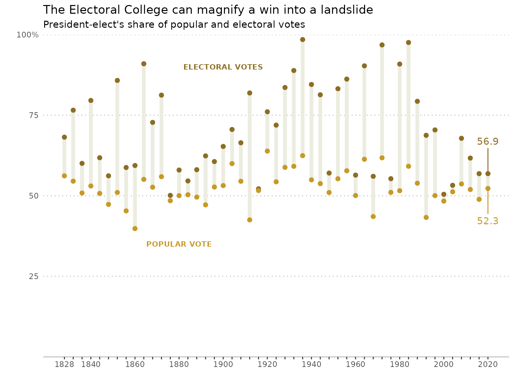

Eason-vignette
Electoral_votes_vs_Popular_votes.Rmd
library(tidyverse)
#> ── Attaching packages ─────────────────────────────────────── tidyverse 1.3.2 ──
#> ✔ ggplot2 3.4.2 ✔ purrr 1.0.1
#> ✔ tibble 3.2.1 ✔ dplyr 1.1.2
#> ✔ tidyr 1.3.0 ✔ stringr 1.5.0
#> ✔ readr 2.1.4 ✔ forcats 1.0.0
#> ── Conflicts ────────────────────────────────────────── tidyverse_conflicts() ──
#> ✖ dplyr::filter() masks stats::filter()
#> ✖ dplyr::lag() masks stats::lag()
library(XML)
library(RCurl)
#>
#> Attaching package: 'RCurl'
#>
#> The following object is masked from 'package:tidyr':
#>
#> complete
library(rlist)
library(mosaic)
#> Registered S3 method overwritten by 'mosaic':
#> method from
#> fortify.SpatialPolygonsDataFrame ggplot2
#>
#> The 'mosaic' package masks several functions from core packages in order to add
#> additional features. The original behavior of these functions should not be affected by this.
#>
#> Attaching package: 'mosaic'
#>
#> The following object is masked from 'package:Matrix':
#>
#> mean
#>
#> The following objects are masked from 'package:dplyr':
#>
#> count, do, tally
#>
#> The following object is masked from 'package:purrr':
#>
#> cross
#>
#> The following object is masked from 'package:ggplot2':
#>
#> stat
#>
#> The following objects are masked from 'package:stats':
#>
#> IQR, binom.test, cor, cor.test, cov, fivenum, median, prop.test,
#> quantile, sd, t.test, var
#>
#> The following objects are masked from 'package:base':
#>
#> max, mean, min, prod, range, sample, sum
library(plotly)
#>
#> Attaching package: 'plotly'
#>
#> The following object is masked from 'package:mosaic':
#>
#> do
#>
#> The following object is masked from 'package:ggplot2':
#>
#> last_plot
#>
#> The following object is masked from 'package:stats':
#>
#> filter
#>
#> The following object is masked from 'package:graphics':
#>
#> layout
library(ggrepel)I am interested in the history of electoral votes vs popular votes in United States because Donald Trump won the 2016 presidential election while while loosing the popular vote to Hillary Clinton; in this election, president-elect Trump won eight percent more electoral votes than popular votes. Similarly, during the 2020 presidential election, Joe Biden won six percent more electoral votes that popular votes.
The claim for this vignette here is that marginal wins in popular votes of presidential elections often appear as landslide victories in the electoral college. This claim implies that the number of electoral votes a candidate receives is not indicative of their popularity nor vice versa.
In this vignette, I will use try to recreate the scatter plot inspired by Pew Research center article, Biden’s victory is another example of how Electoral College wins are bigger than popular vote ones, and other provide alternative designs to the graph.
Data Wrangling from Data 202 Class with Tristan Contant
# list of years for which we will collect election data
election_years <- seq(from = 1828, to = 2020, by = 4)
# an empty dataframe that we will add information to
election_data <- data.frame()
# for each election year, go to the website, find data, and add it to the working dataframe
for (year in election_years) {
# different URL for each election year
url_str <- paste("https://www.presidency.ucsb.edu/statistics/elections/", as.character(year), sep = "")
url <- getURL(url_str, .opts = list(ssl.verifypeer = FALSE))
# read in table
tables <- readHTMLTable(url)
tables <- list.clean(tables, fun = is.null, recursive = FALSE)
df <- tables[[1]]
# find data in table depending on year
if (year < 2016) {
df <- df[c(3,4,5,6), ]
df <- df %>% subset(select = c(V4, V6, V8))
df <- df %>% rename(candidate = V4,
n_elect = V6,
n_pop = V8)
df <- df %>% mutate(year = year) %>%
filter(!is.na(n_elect))
} else {
df <- df[c(4,5), ]
df <- df %>% subset(select = c(V3, V5, V7))
df <- df %>% rename(candidate = V3,
n_elect = V5,
n_pop = V7)
df <- df %>% mutate(year = year)
}
# add information to working dataframe
election_data <- election_data %>% bind_rows(df)
}
glimpse(election_data)
#> Rows: 118
#> Columns: 4
#> $ candidate <chr> "Andrew Jackson", "John Quincy Adams", "Andrew Jackson", "He…
#> $ n_elect <chr> "178", "83", "219", "49", "11", "7", "170", "73", "26", "14"…
#> $ n_pop <chr> "642,553", "500,897", "701,780", "484,205", "0", "100,715", …
#> $ year <dbl> 1828, 1828, 1832, 1832, 1832, 1832, 1836, 1836, 1836, 1836, …
# make n_elect and n_pop integer types
election_data <- election_data %>% mutate(n_elect = as.integer(n_elect),
n_pop = as.integer(gsub(",", "", n_pop)))
# calculate perc_elect and perc_pop
election_data <- election_data %>% left_join(election_data %>% group_by(year) %>% summarise(total_n_elect = sum(n_elect)), by = "year") %>%
left_join(election_data %>% group_by(year) %>% summarise(total_n_pop = sum(n_pop)), by = "year") %>%
mutate(perc_elect = n_elect / total_n_elect * 100,
perc_pop = n_pop / total_n_pop * 100)
# determine the winner for each year
election_data <- election_data %>% left_join(election_data %>% group_by(year) %>% summarise(win_perc_elect = max(perc_elect)), by = "year")
election_data <- election_data %>% mutate(is_winner = (win_perc_elect == perc_elect))
# remove extraneouse variables
election_data <- election_data %>% subset(select = -c(win_perc_elect))
glimpse(election_data)
#> Rows: 118
#> Columns: 9
#> $ candidate <chr> "Andrew Jackson", "John Quincy Adams", "Andrew Jackson",…
#> $ n_elect <int> 178, 83, 219, 49, 11, 7, 170, 73, 26, 14, 234, 60, 170, …
#> $ n_pop <int> 642553, 500897, 701780, 484205, 0, 100715, 764176, 55081…
#> $ year <dbl> 1828, 1828, 1832, 1832, 1832, 1832, 1836, 1836, 1836, 18…
#> $ total_n_elect <int> 261, 261, 286, 286, 286, 286, 283, 283, 283, 283, 294, 2…
#> $ total_n_pop <int> 1143450, 1143450, 1286700, 1286700, 1286700, 1286700, 15…
#> $ perc_elect <dbl> 68.199234, 31.800766, 76.573427, 17.132867, 3.846154, 2.…
#> $ perc_pop <dbl> 56.194237, 43.805763, 54.541074, 37.631538, 0.000000, 7.…
#> $ is_winner <lgl> TRUE, FALSE, TRUE, FALSE, FALSE, FALSE, TRUE, FALSE, FAL…
election_data <- election_data %>%
mutate( new_perc_elect =
case_when(
perc_elect == 100 ~ 81.25,
TRUE ~ perc_elect)) %>%
mutate(new_perc_elect = as.numeric(new_perc_elect))
election_data2 <- election_data %>%
# tidy data for ease of coding visual aesthetic of `type`
pivot_longer(cols = c(new_perc_elect, perc_pop), names_to = "type", values_to = "perc") %>%
# filter for president-elects
filter(is_winner)Since is a graph based vignette, I will not talk too much about it. But it is cool web scraping and data wrangling skill!
Create a Simple Scatter Plot
fig1 <- plot_ly(data = election_data2,
x = ~year, y = ~perc, type = 'scatter', mode = 'markers',
color =~ type, colors = c("#8C6E23", "#C79A26"),
text = ~paste('Year:', year, "$<br>Candidate: ", candidate))
fig1
updatemenus <- list(
list(
active = -1,
type = 'buttons',
buttons = list(
list(
label = "Popular Votes",
method = "update",
args = list(list(visible = c(FALSE, TRUE)),
list(title = "Popular Votes Precentage from 1828"))),
list(
label = "Electoral Votes",
method = "update",
args = list(list(visible = c(TRUE, FALSE)),
list(title = "Electoral Votes Precentage from 1828"))),
list(
label = "Both Votes",
method = "update",
args = list(list(visible = c(TRUE, TRUE)),
list(title = "The Electoral College can magnify a win into a landslide")))
)
)
)
election_data2 <- election_data2 %>%
rename(Electoral_Vote = perc_elect ) %>%
mutate(percentage = paste0(round(perc, 2),"%", sep="", recycle0 = FALSE)) %>%
mutate(vote_type = case_when(type == "perc_pop" ~ "Popular vote",
type == "new_perc_elect" ~ "Electoral vote"))
election_data2 <- election_data2 %>% mutate(vote_type = case_when(type == "perc_pop" ~ "Popular vote",
type == "new_perc_elect" ~ "Electoral vote"))
fig1 <- plot_ly(data = election_data2 ,
x = ~year, y = ~perc, type = 'scatter', mode = 'markers',
color =~ vote_type, colors = c("#232323", "#3abcbd"),
text = ~paste("President:",candidate, "$<br>Percent: ", percentage,"$<br>Year: ", year )) %>%
layout(showlegend = FALSE, updatemenus = updatemenus)
fig1Here is ploty version of interactive scatter plot with president name, year, and percentage of popular vote or electoral vote. With the buttons I added, now we can click buttons to only focus on the electoral or popular vote.
Exploring Data: Bar Chart
election_data <-
election_data %>%
# filter by election winners
filter(is_winner) %>%
# compute difference in electoral and popular vote
mutate(diff = new_perc_elect - perc_pop)
bar_fig <- plot_ly(
election_data %>%
# filter by election winners
filter(is_winner) %>%
# compute difference in electoral and popular vote
mutate(diff = new_perc_elect - perc_pop) ,
x = ~year,
y = ~diff,
name = "SF Zoo",
type = "bar"
) %>%
layout(title = 'Difference in percent of electoral and opular votes',
yaxis = list(title = '%electoral-%popular'))
bar_figThe fact that electoral vote percentage will always be higher than popular vote percentage allow us to use bar chart here. With the bar chart, we can see that started in 2008, the difference is getting smaller, will the trend continue in 2024?
Exploring Data: Line Chart
The scatter shows the percent of electoral and popular votes the winning candidate received over time. However, the image does not show us how the total number of electoral and popular votes changes over time. Furthermore, the graphic does now show the raw number of voters and electors that winning candidates received. We will explore these relationships in the following alternative graph.
line_scatter_pop <- plot_ly(election_data %>%
filter(is_winner),
x = ~year, y = ~n_pop, name = "Winner's popular votes", type = 'scatter', mode = 'markers') %>%
layout(title = 'Total voters over time',
yaxis = list(title = 'voters'))
line_scatter_pop <- line_scatter_pop %>% add_trace(y = ~total_n_pop, name = 'Total voters', mode = 'lines+markers')
line_scatter_pop
line_scatter_ele <- plot_ly(election_data %>%
filter(is_winner),
x = ~year, y = ~n_elect, name = "Winner's electors", type = 'scatter', mode = 'markers') %>%
layout(title = 'Total electors over time',
yaxis = list(title = 'electors'))
line_scatter_ele <- line_scatter_ele %>% add_trace(y = ~total_n_elect, name = "Total electors", mode = 'lines+markers')
line_scatter_eleThe first thing that is noticeable from this graph is that the total number of electors has stagnated while the total number of voters continues to increase. The number of electors is determined by adding the number of people in the house and the number of senators.
Since 1913, the number of people in the house has been set at 435 (Public Law 62-5). The number of senators is set a two for each state and the District of Columbia. Therefore, given no changes in these laws, the number of electors will only increase by the formation of new states. For example, if Puerto Rico became a state the number of electors would increase to 540. We do not foresee in the inclusion of many states in the future outside of Puerto Rico, so we expect the number of electors to remain stable in the future.
It is interesting to see the variability in the number of electors in the 1800s. With the formation of new states, we see a massive increase in the number of electors. Another point of interest is the sudden dip in electors in 1864. This drop is due to the invalidation of confederate state electoral votes during the civil war.
Popular votes, on the other hand, reflect a continuous trend of increased raw voter participation. Prior to the 1900’s, it looks like the increase was linear, but afterwards, the number of voter growth could be exponential or faster. The 2020 presidential election had more people voting than ever before, a record in raw voter participation. However, this increase may be the result of increased population, not a greater desire to vote. More research would need to be conducted to better assess such inquiries.
We also can see the number of popular and electoral votes that the winning candidate received. The number of popular votes a winning candidate recieved has continued to increase. On the other hand, the number of electoral votes a candidate has received does not have a visually significant trend, although one may argue that candidates have recently not won as many electoral votes as candidates in the 1900s. (Joint writing by Tristan Contant and Yuqian Wang)
Post-credits scene
Original good version
election_data %>%
# tidy data for ease of coding visual aesthetic of `type`
pivot_longer(cols = c(new_perc_elect, perc_pop), names_to = "type", values_to = "perc") %>%
# filter for president-elects
filter(is_winner) %>%
# create plot
ggplot(aes(x = year, y = perc)) +
# adding vertical lines
geom_line(aes(group = year), size = 2, color = "#ECEDE0") +
# add points with color mapped to type
geom_point(aes(color = type), size = 2, show.legend = FALSE) +
# removing extra margins on y scale
ylim(0,100) +
theme(
# remove background color
panel.background = element_blank(),
# change grid color and linetype
panel.grid = element_line(linetype = "dotted", color = "grey"),
# remove minor grid lines in x and y-axis
panel.grid.minor = element_blank(),
# change size of major x grid lines to 0 to remove but preserve axis ticks
panel.grid.major.x = element_line(size = 0),
# remove tick marks on y-axis
axis.ticks.y = element_blank(),
# change color of tick marks on x-axis
axis.line.x = element_line(color = "grey")) +
# setting colors
scale_color_manual(values=c("#8C6E23", "#C79A26")) +
# change x-axis name, breaks, and labels
scale_x_continuous(name = "",
breaks = election_years,
labels = election_years %>% replace(election_years%%10 != 0 & election_years != 1828, "")) +
# change y-axis name, limits, margins, breaks, and labels
scale_y_continuous(name = "",
limits = c(0,100),
expand = c(0,0),
breaks = c(25, 50, 75, 100),
labels = c("25", "50", "75", "100%"),) +
# add title and subtitle
labs(
title = "The Electoral College can magnify a win into a landslide",
subtitle = "President-elect's share of popular and electoral votes"
) +
# add text to graph in place of a legend
annotate(geom="text", x=1900, y=90, label='bold("ELECTORAL VOTES")',
color="#8C6E23", size = 3, parse = TRUE) +
annotate(geom="text", x=1880, y=35, label='bold("POPULAR VOTE")',
color="#C79A26", size = 3, parse = TRUE) +
# adding labels for 2020 points
geom_label_repel(data = election_data %>%
pivot_longer(cols = c(new_perc_elect, perc_pop), names_to = "type", values_to = "perc") %>%
filter(is_winner) %>%
subset(year == 2020) %>%
mutate(perc = round(perc, 1)),
aes(label = perc, color = type),
nudge_y = c(10, -10),
label.size = 0,
show.legend = FALSE)
#> Warning: Using `size` aesthetic for lines was deprecated in ggplot2 3.4.0.
#> ℹ Please use `linewidth` instead.
#> This warning is displayed once every 8 hours.
#> Call `lifecycle::last_lifecycle_warnings()` to see where this warning was
#> generated.
#> Warning: The `size` argument of `element_line()` is deprecated as of ggplot2 3.4.0.
#> ℹ Please use the `linewidth` argument instead.
#> This warning is displayed once every 8 hours.
#> Call `lifecycle::last_lifecycle_warnings()` to see where this warning was
#> generated.
#> Scale for y is already present.
#> Adding another scale for y, which will replace the existing scale.
The author actually still likes ggplot, however, we can convert our
ggplot graph into ploty item with ggplotly(). ## ggplot way
to make it as a plotly
p <- election_data2 %>%
# create plot
ggplot(aes(x = year, y = perc)) +
# adding vertical lines
geom_line(aes(group = year), size = 2, color = "#ECEDE0") +
# add points with color mapped to type
geom_point(aes(color = type), size = 2, show.legend = FALSE) +
# removing extra margins on y scale
ylim(0,100) +
theme(
# remove background color
panel.background = element_blank(),
# change grid color and linetype
panel.grid = element_line(linetype = "dotted", color = "grey"),
# remove minor grid lines in x and y-axis
panel.grid.minor = element_blank(),
# change size of major x grid lines to 0 to remove but preserve axis ticks
panel.grid.major.x = element_line(size = 0),
# remove tick marks on y-axis
axis.ticks.y = element_blank(),
# change color of tick marks on x-axis
axis.line.x = element_line(color = "grey")) +
# setting colors
scale_color_manual(values=c("#8C6E23", "#C79A26")) +
# change x-axis name, breaks, and labels
scale_x_continuous(name = "",
breaks = election_years,
labels = election_years %>% replace(election_years%%10 != 0 & election_years != 1828, "")) +
# change y-axis name, limits, margins, breaks, and labels
scale_y_continuous(name = "",
limits = c(0,100),
expand = c(0,0),
breaks = c(25, 50, 75, 100),
labels = c("25", "50", "75", "100%"),) +
# add title and subtitle
labs(
title = "The Electoral College can magnify a win into a landslide",
subtitle = "President-elect's share of popular and electoral votes"
) +
# add text to graph in place of a legend
annotate(geom="text", x=1900, y=90, label="ELECTORAL VOTES",
color="#8C6E23", size = 3, parse = TRUE) +
annotate(geom="text", x=1880, y=35, label="POPULAR VOTE",
color="#C79A26", size = 3, parse = TRUE) +
# adding labels for 2020 points
geom_label_repel(data = election_data %>%
pivot_longer(cols = c(new_perc_elect, perc_pop), names_to = "type", values_to = "perc") %>%
filter(is_winner) %>%
subset(year == 2020) %>%
mutate(perc = round(perc, 1)),
aes(label = perc, color = type),
nudge_y = c(10, -10),
label.size = 0,
show.legend = FALSE)
#> Scale for y is already present.
#> Adding another scale for y, which will replace the existing scale.
ggplotly(p)
#> Warning in geom2trace.default(dots[[1L]][[2L]], dots[[2L]][[1L]], dots[[3L]][[1L]]): geom_GeomLabelRepel() has yet to be implemented in plotly.
#> If you'd like to see this geom implemented,
#> Please open an issue with your example code at
#> https://github.com/ropensci/plotly/issues
#> Warning in geom2trace.default(dots[[1L]][[2L]], dots[[2L]][[1L]], dots[[3L]][[1L]]): geom_GeomLabelRepel() has yet to be implemented in plotly.
#> If you'd like to see this geom implemented,
#> Please open an issue with your example code at
#> https://github.com/ropensci/plotly/issuesClearly, we can see the most of the features were shown here after converting, but it is not too neat or clean as we have in ggplot setting. In the beginning of the assignment, I was trying to reproduce the whole plot with ploty setting, however, it is not easy.